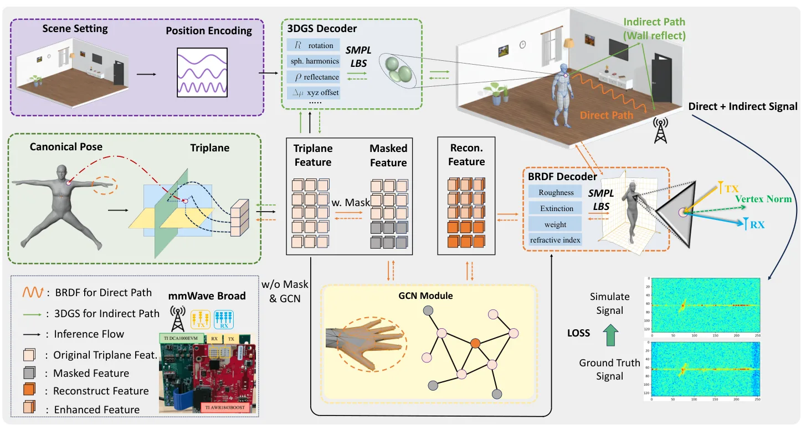
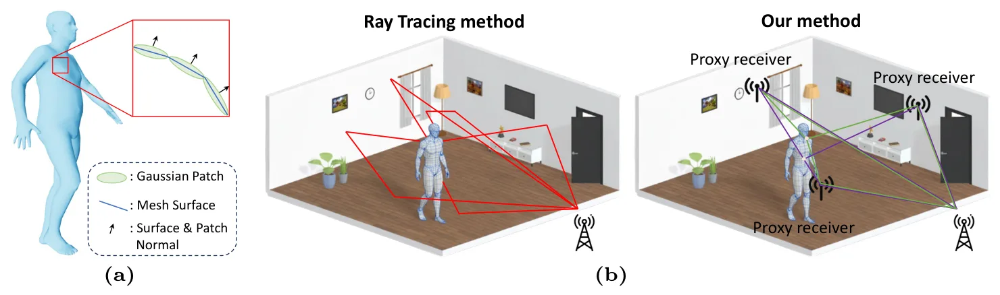

HybridSim：面向毫米波人体感知的物理—学习混合数字孪生HybridSim: A Physics-Learning Hybrid Digital Twin for mmWave Human Sensing
对 3DGS 表示电磁多路径具有旁侧启发，也与雷达仿真相关；核心任务是固定场地人体感知，不是 SLAM、GNSS 或通用三维重建。
一句话工作总结
用物理逆渲染建直接回波、用 3DGS 拟合场地多路径，低成本生成毫米波雷达数字孪生数据。
摘要
HybridSim 在固定室内房间中，从动态人体网格合成毫米波雷达信号，并把传播拆为直接路径和间接路径。直接路径使用带微表面 BRDF 的逆渲染建模主要表面反射；间接路径则结合 3D Gaussian Splatting 与虚拟接收器几何，拟合场地特定的多路径干扰，以低于完整光线追踪的成本复现传播。实验显示其与物理参考的一致性更好，并能通过场地特定数据增强改善下游人体感知。
High-fidelity simulation of mmWave radar signals for dynamic human motion is valuable for developing radar-based human sensing models; yet collecting accurately labeled measurements for a specific deployment site remains expensive. We present HybridSim, a physics-learning hybrid simulator that synthesizes mmWave radar signals from dynamic human meshes under a fixed indoor room configuration, explicitly decoupling propagation into two components. To parameterize the human subject, we use a tri-plane representation to extract human features and a Graph Convolutional Network to stabilize optimization and mitigate gradient instability. The direct signal path is modeled via an inverse-rendering formulation with a microfacet BRDF to capture primary surface reflections. In parallel, the indirect path is approximated by combining 3D Gaussian Splatting with a virtual-receiver geometry to fit and reproduce site-specific multipath interference patterns, achieving substantially lower computational cost than explicit full ray tracing. Experiments in a fixed-room setting show improved agreement with a physically based reference and consistent gains on downstream radar-based human sensing tasks when using HybridSim for site-specific data augmentation.
中文解读摘录
- 链接：arXiv 2607.15806 · 项目页
- 核心贡献：直接路径采用微表面 BRDF 逆渲染，间接路径结合 3DGS 与虚拟接收器几何拟合固定房间的多路径干扰。
- 相关性判断：对用 3DGS 表示环境传播和毫米波多路径仿真有启发，但核心是人体感知数据合成，不是 SLAM/GNSS；因此列为低优先级旁侧工作。
- 待核查：跨房间迁移、实测雷达标定、动态遮挡，以及这种场表示能否服务雷达定位/建图。
图表/页面预览

{kind=link}

{kind=link}
